2024年、新たな暇つぶしの旅へようこそ！このガイドは、あなたの日々を刺激的に変える究極のエンタメサイトを集めました。
退屈な時間？そんなの忘れてしまうほどのエンターテインメントがここにはあります。手軽に楽しめるサイトから、思わず時間を忘れてしまうようなサイトまで。
私たちが厳選したこれらのサイトは、あなたの毎日に新しい喜びをもたらします。早速、2024年の最高のエンタメ体験を一緒に探しましょう！
この記事の目次
見るだけで楽しい暇つぶし！話題のおもしろエンタメサイト集【特選３選】
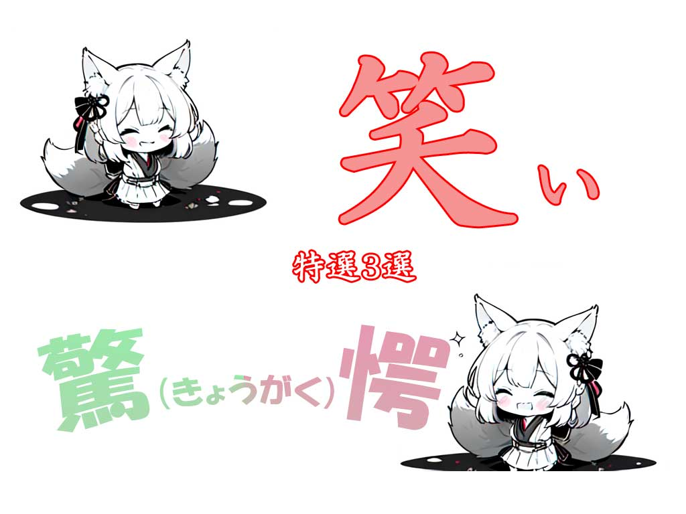
①ぼけて
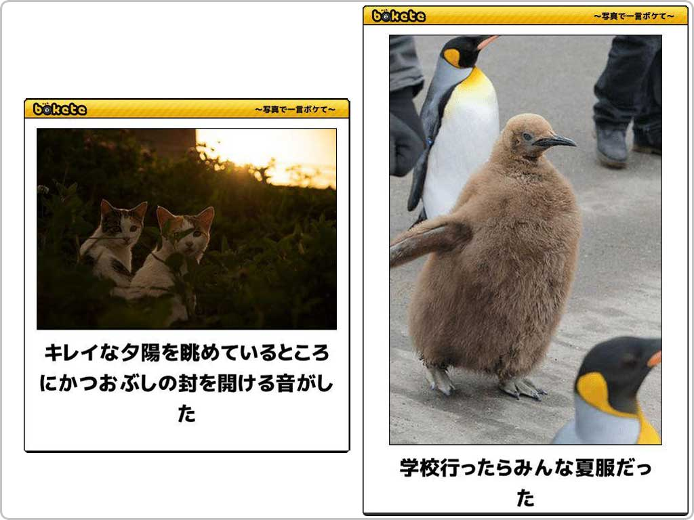
| おすすめ度 | ★★★★★ |
|---|---|
| ジャンル | お笑い |
| 特徴 | 一瞬で笑える |
「ボケて」は、暇つぶしに最適なユニークなエンタメサイトです。写真に対して面白いコメントをする「ボケ」を楽しむコミュニティで、日常を忘れて笑いに没頭できます。
面白い写真が満載で、あなたもボケてみることができます。クリエイティブな発想で笑いを生み出し、他のユーザーとの交流も楽しめます。
「ボケて」は、退屈な時間を一瞬で楽しいものに変える魔法のようなサイト。
暇つぶしにピッタリで、一度訪れたら病みつきになること間違いなしです。
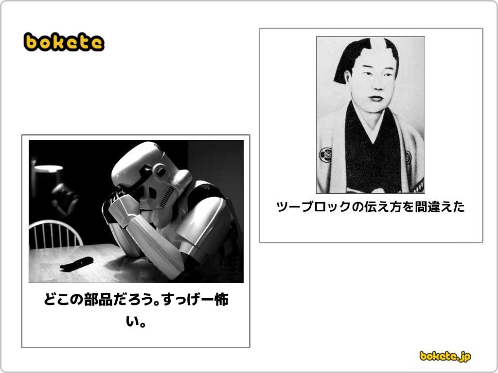
毎日更新される新しい「ボケ」で、毎日の生活に笑いとサプライズを。あなたの日常に新たな楽しみを加えるため、ぜひ「ボケて」を訪れてみてください。
②虚構新聞
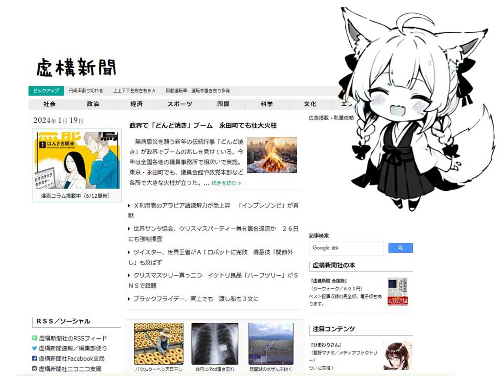
| おすすめ度 | ★★★★☆ |
|---|---|
| ジャンル | 笑い、驚き体験 |
| 特徴 | 自宅に居ながら世界を虚構する |
「虚構新聞」は、ありえないニュースで溢れるユニークなサイト。現実と虚構の境界線で、思わず笑ってしまうような記事があなたを待っています。
このサイトは、非現実的なニュースであなたの想像力を刺激。日常を忘れて虚構の世界に没頭するのに最適な暇つぶしです。
毎日更新される奇想天外な記事は、読むだけで楽しく、友達と共有したくなること間違いなし。 あなたの退屈な時間を笑いに変えます。
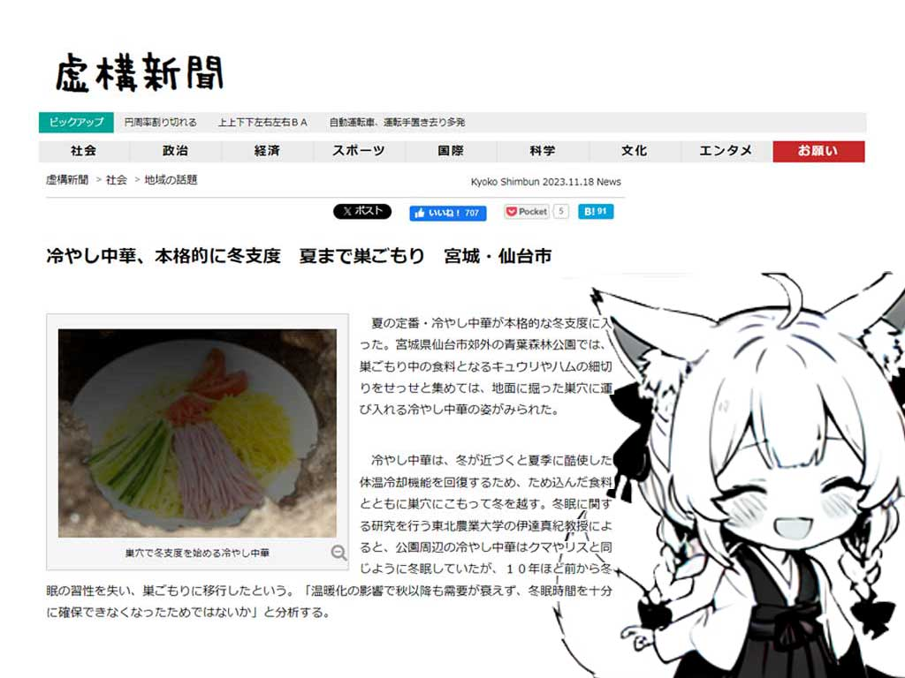
「虚構新聞」は、ただの暇つぶし以上の価値を提供。あなたの日々に新鮮な楽しみとサプライズを加えてくれるでしょう。今すぐアクセスして、そのユーモアを体験してみてください。
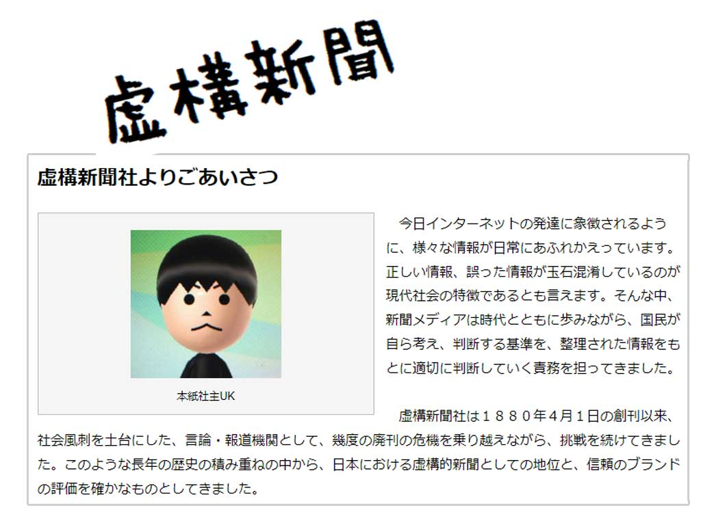
③NASAのライブ映像

| おすすめ度 | ★★★★☆ |
|---|---|
| ジャンル | 絶景、壮大 |
| 特徴 | 毎日に新たな発見と驚きに満ちた体験を |
NASAのライブ映像は、宇宙の壮大さをリアルタイムで体験できる、息をのむようなサイトです。地球をはるかに超えた光景が、あなたの画面に広がります。
このサイトでは、 国際宇宙ステーションからのライブ映像や、宇宙ミッションの最新情報を手に入れることができます。 宇宙への旅に出るかのような感覚を味わえます。
地球外の壮大な景色を見ながら、日常の暇つぶしを特別な体験に変えましょう。NASAのライブ映像は、宇宙好きなら誰もが夢中になるはずです。
宇宙の神秘に触れ、新しい発見を楽しむために、NASAのライブ映像サイトを訪れてみてください。毎日が新たな発見と驚きに満ちた体験を提供します。
お布団で楽しむ暇つぶし！無料で楽しめるマンガ＆動画の究極サイト
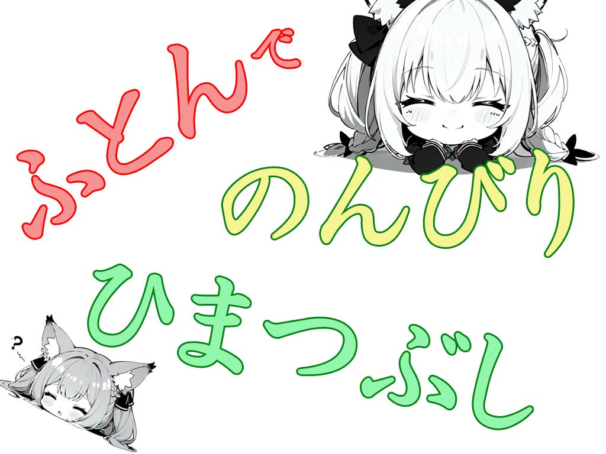
①マンガ図書館Z
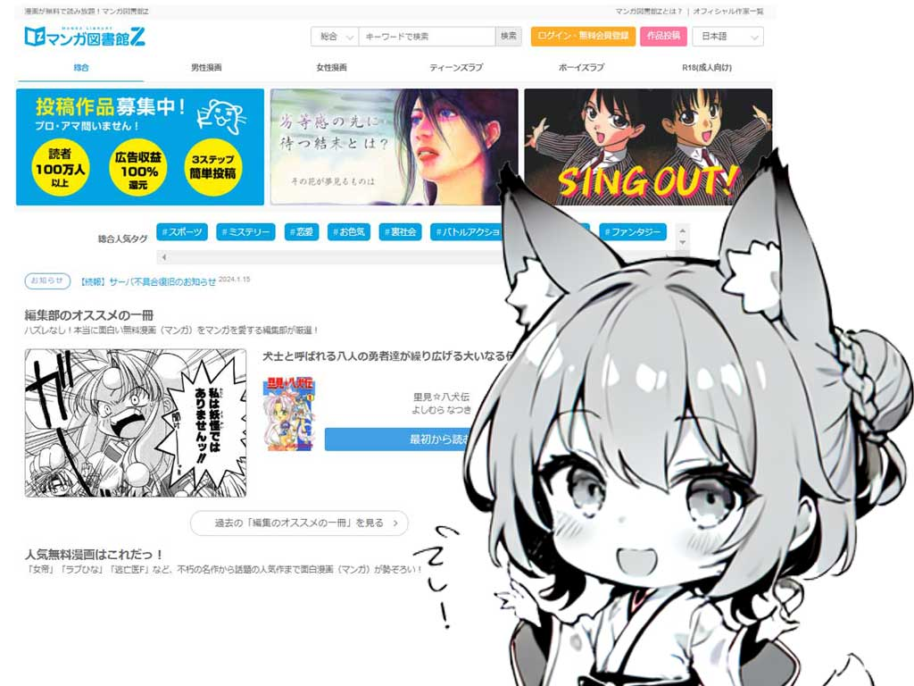
| おすすめ度 | ★★★★★ |
|---|---|
| ジャンル | まんが読み放題 |
| 特徴 | マンガ好き必見 |
「マンガ図書館Z」は、無料で多様なマンガを楽しめる夢のようなサイト。名作から隠れた名作まで、幅広いジャンルのマンガが揃っています。
このオンライン図書館では、新しいお気に入りを見つけるたびに、マンガの世界にどっぷり浸かることができます。退屈な時間が、一瞬で冒険への旅立ちに変わります。
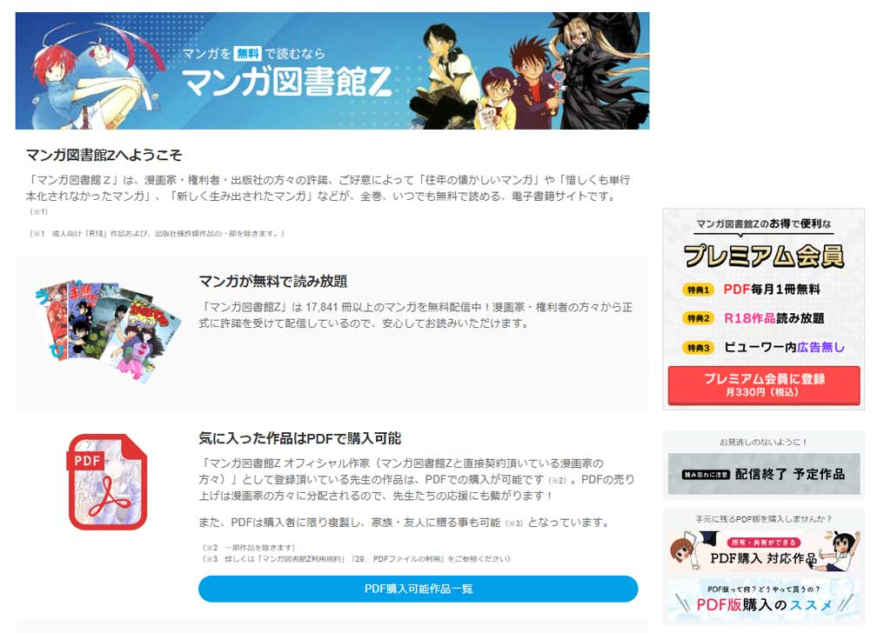
「マンガ図書館Z」は、お布団の中でのんびりと、あるいは通勤中のスマホで気軽にマンガを読むのに最適。いつでもどこでも、あなたの暇つぶしを充実させます。
無料アクセスでこの上ない読書体験を。多彩なマンガの宝庫「マンガ図書館Z」で、新たな発見と感動を体験してください。
②もちまる日記（YouTube動画）
| おすすめ度 | ★★★★★ |
|---|---|
| ジャンル | ネコちゃん |
| 特徴 | もちまるとゆかいな下僕さんが楽しく癒してくれる |
「もちまる日記」は、ほのぼのとした日常を映し出す、愛らしいYouTube動画チャンネルです。もちまるというネコちゃんと下僕さんの日々が、あなたの心を癒やします。
このチャンネルでは、もちまるのかわいらしい行動や、日常の小さな出来事が、視聴者に幸せなひとときを提供。まるで絵本の世界に迷い込んだような感覚になります。
もちまる日記は、どんな時もあなたを楽しませる暇つぶしの宝庫。お布団の中でリラックスしながら、もちまるの世界に没頭する時間は、まさに至福のひととき。
このチャンネルを訪れれば、日常のストレスから解放され、心がほっこりと温まること間違いなし。あなたの暇つぶしに、もちまる日記の動画をぜひ加えてみてください。
③小説家になろう
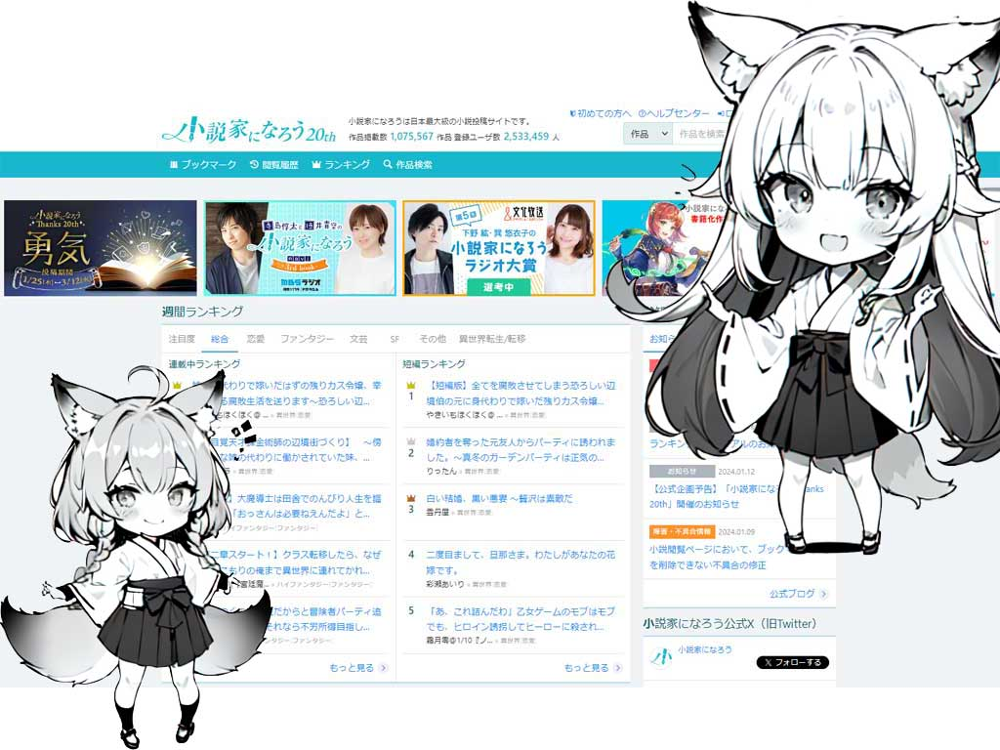
| おすすめ度 | ★★★★☆ |
|---|---|
| ジャンル | ファンタジー |
| 特徴 | 無料で小説を読む |
「小説家になろう」は、創造力豊かな作家たちによる、無限の物語が広がるオンライン小説プラットフォームです。あなたの想像力を刺激する物語が、ここにあります。
このサイトでは、ファンタジーからロマンス、サスペンスまで、さまざまなジャンルの小説が無料で読めます。新しい物語に出会い、日常から抜け出す旅に出ましょう。
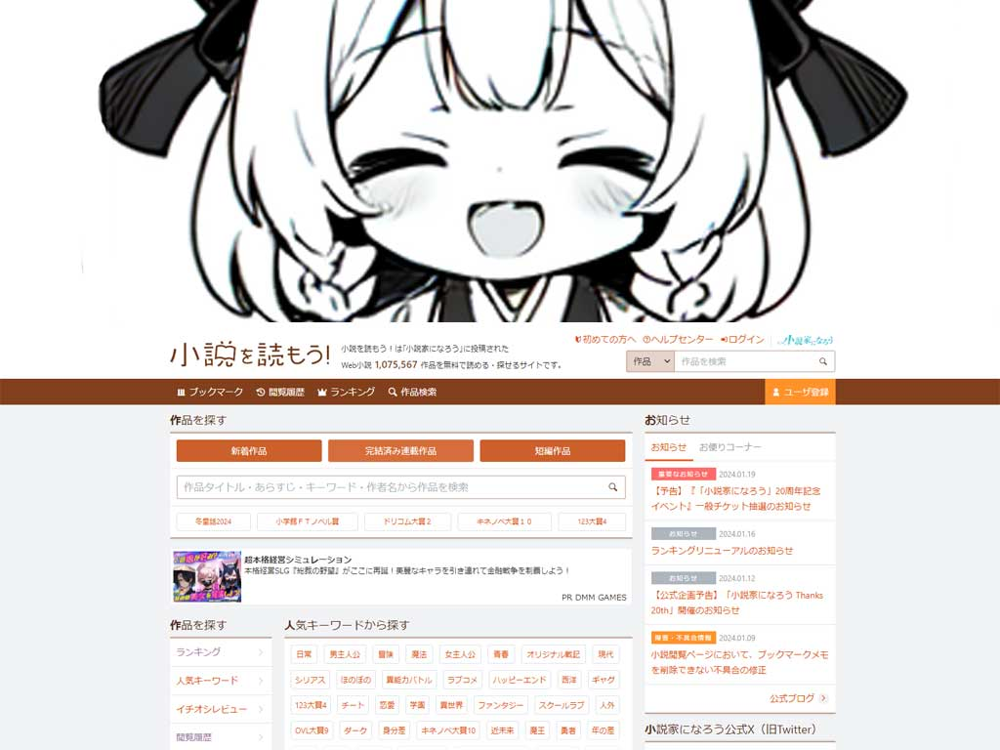 小説を読もうへGO！
「小説家になろう」は、読者だけでなく、書き手にも開かれた場所。自分だけの物語を発表し、他の読者と交流することもできます。
あなたのお布団での暇つぶしを、壮大な物語で満たしてみませんか？「小説家になろう」で、新たな物語の世界に足を踏み入れてください。
暇つぶしにぴったりサイト！簡単に楽しめる選りすぐりのオンラインゲームやパズルゲーム
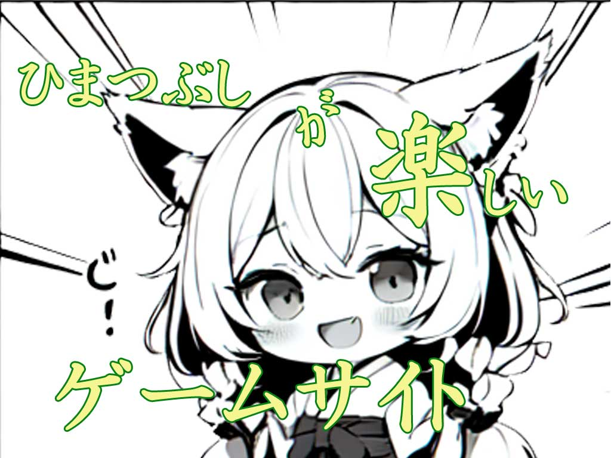
①巨大オセロゲーム
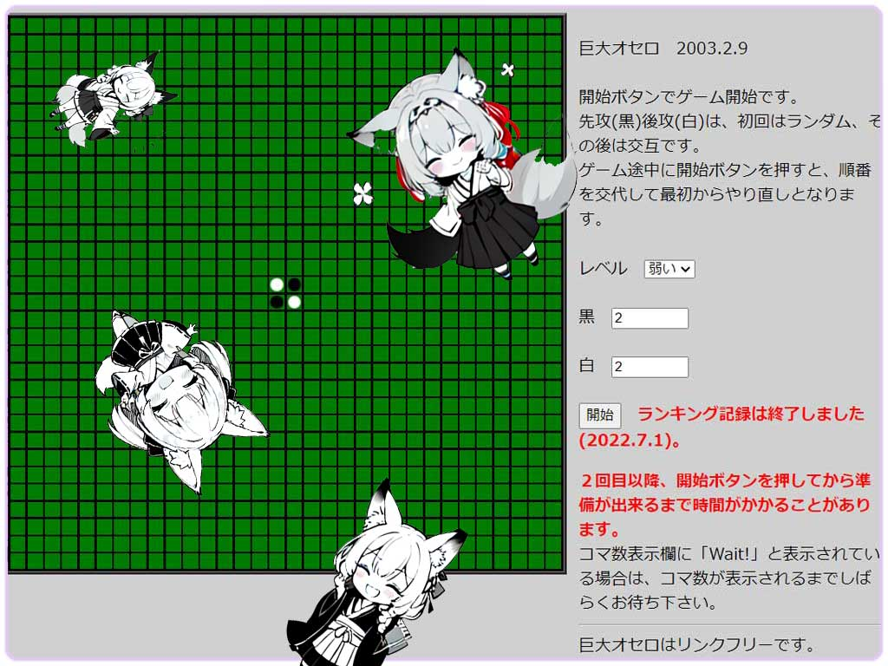
| おすすめ度 | ★★★★☆ |
|---|---|
| ジャンル | ボードゲーム |
| 特徴 | おせろ！！ |
「巨大オセロゲーム」は、定番のリバーシを新たな形で楽しめるオンラインゲームです。このゲームは、戦略と駆け引きが鍵となる、楽しさ満点の暇つぶしにぴったりです。
大画面で繰り広げられるオセロの勝負は、思考力と判断力を鍛えながら楽しめます。初心者から上級者まで、誰もが夢中になること間違いなし。
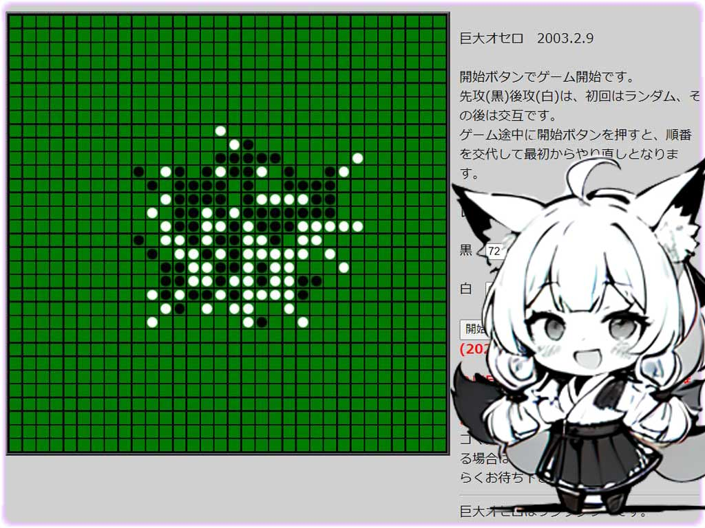
リバーシの魅力を再発見し、友達や家族との対戦で更なる楽しみを見つけましょう。巨大オセロゲームは、あなたの休憩時間を充実させ、日々のストレスを忘れさせてくれます。
今すぐアクセスして、巨大オセロの世界に飛び込んでみてください。簡単にアクセスでき、長時間の楽しさを提供するこのゲームは、あなたの暇つぶしに最適な選択です。
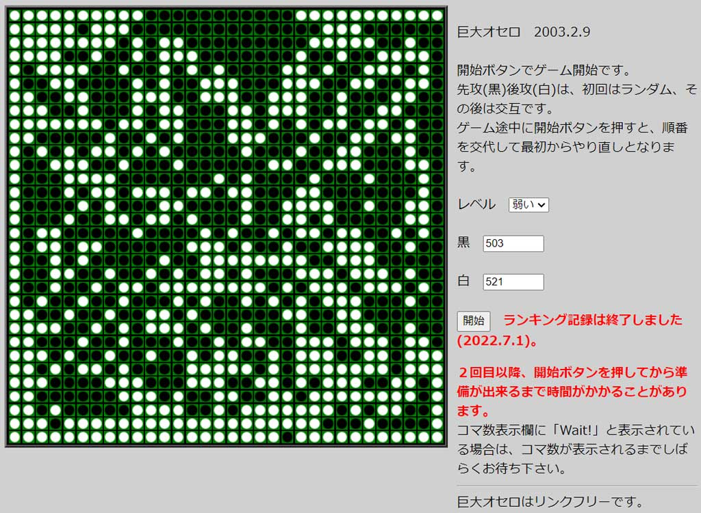
②脳トレゲーム
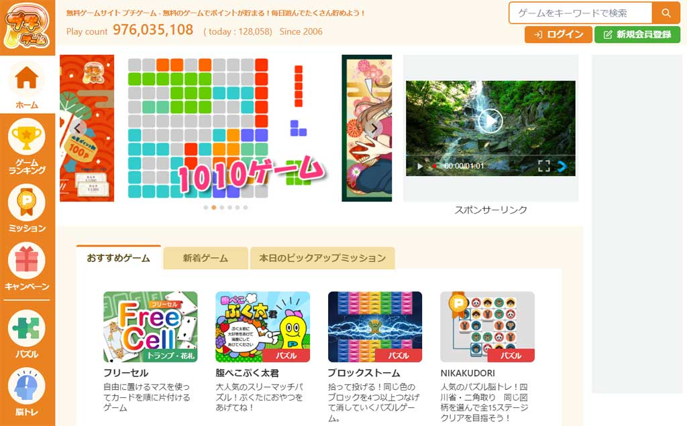
| おすすめ度 | ★★★★☆ |
|---|---|
| ジャンル | 脳トレゲーム |
| 特徴 | 楽しく脳をきたえられる無料ゲーム |
「脳トレ記憶力」は、楽しみながら脳を鍛えることができる、挑戦的なオンラインゲームです。このゲームで、暇つぶしをもっとプロダクティブにしましょう。
簡単なルールで始められるこれらのゲームは、記憶力を高め、集中力を向上させる効果があります。年齢に関わらず、誰でも楽しむことができる優れたデザインです。
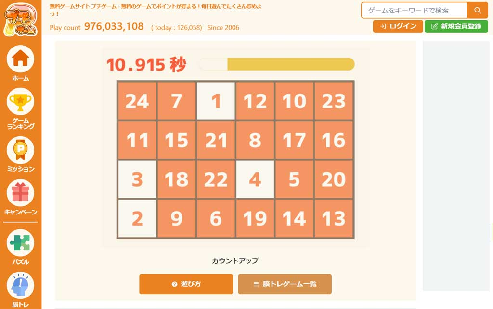
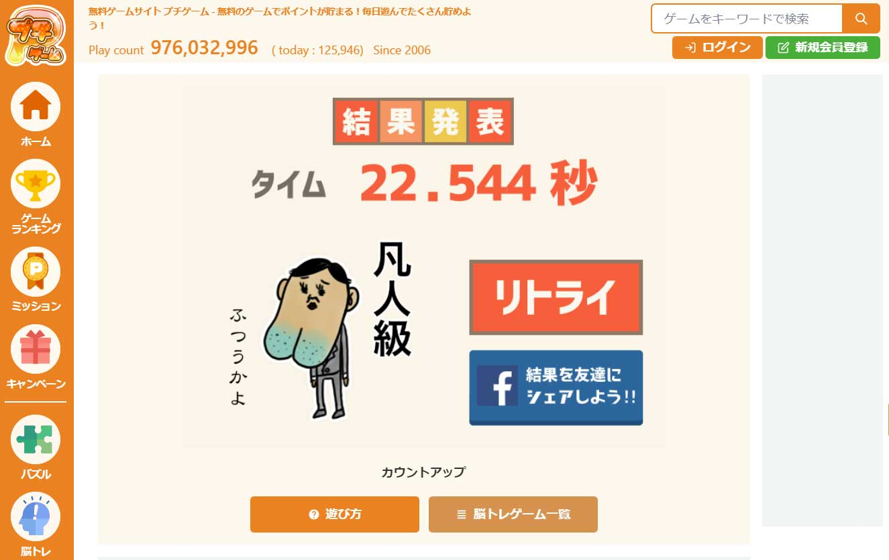
さまざまなゲームが用意されており、自分のペースで楽しみながら脳のトレーニングが可能です。毎日少しずつ挑戦することで、記憶力が向上していくのを実感できます。
「脳トレゲーム」で、脳の健康を維持しながら、有意義な暇つぶしを体験してください。プレイするたびに新たな挑戦が待っており、あなたの脳を刺激し続けます。
③2048
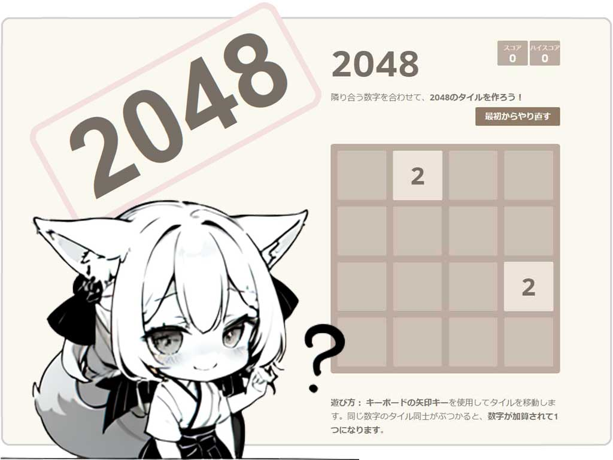
| おすすめ度 | ★★★★☆ |
|---|---|
| ジャンル | ボードゲーム |
| 特徴 | シンプルな戦略ゲーム |
2048は、数字をスライドさせて合成する、シンプルだけど中毒性のあるパズルゲームです。このゲームは、思考力と戦略を駆使して高得点を目指します。
各タイルに書かれた数字をスライドさせ、同じ数字を合わせて大きな数字を作り出します。シンプルなルールながら、勝利への道は驚くほど奥深い！
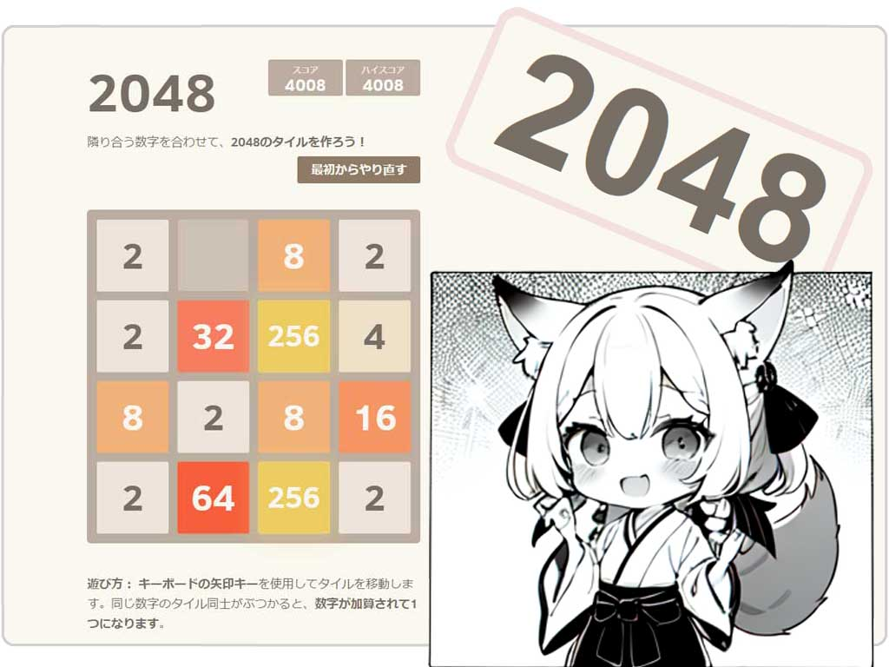
このゲームは、あなたの暇つぶしに最適。いつの間にか時間を忘れて夢中になってしまう魅力があります。パズル好きなら絶対にハマること間違いなし。
2048は、頭の体操にもぴったり。スコアを競ったり、自己記録を更新する楽しさを体験しましょう。今すぐアクセスして、挑戦してみてください！
最後に：
本記事では暇つぶしに使える面白いサイトを解説しました。
暇つぶしをしたいときには、面白いサイトを訪れましょう！
時間を忘れて楽しむことができます。
まずは「ボケて」サイトでクスっと笑いましょう。
以上、暇つぶしに使える面白いサイトまとめでした。